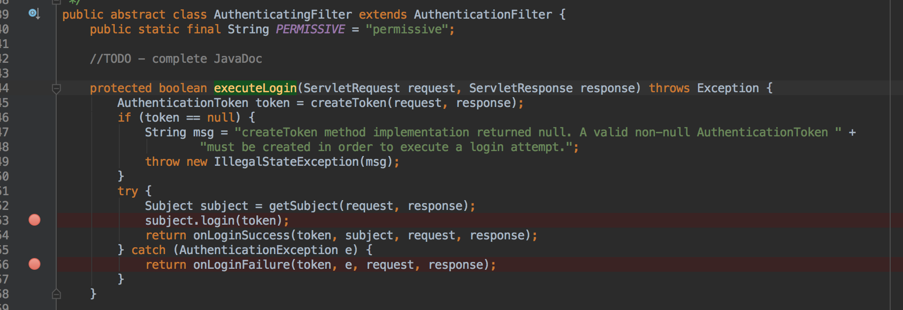

Shiro集成CAS登录成功跳转地址问题
背景：在解决了上面
shiro登录成功后 302 问题后，今天又出现了另外一个问题。我通过浏览器通过cas server端登录成功后跳转的首页是正常的，但是同事登录成功后调转都是配置的 404 页面。
通过日志定位问题和远程 debug 对比排查问题
日志排查
通过日志排查发现，除了我之外，其他人登录后都是跳转到配置的 org.apache.shiro.cas.CasFilter#failureUrl，但是使用相同的用户登录校验走的是相同的逻辑，但是我和其他人得到了不同的结果。
所以排除了用户权限校验逻辑中的问题。
远程 debug 排查
在 CasFilter 中的回调处理中打了断点，如下图所示：

结果发现 subject.login(token) 正常执行，于是跟踪 onLoginSuccess 方法。
@Override
protected boolean onLoginSuccess(AuthenticationToken token, Subject subject, ServletRequest request,
ServletResponse response) throws Exception {
issueSuccessRedirect(request, response);
return false;
}
protected void issueSuccessRedirect(ServletRequest request, ServletResponse response) throws Exception {
WebUtils.redirectToSavedRequest(request, response, getSuccessUrl());
}
上面都没有问题，getSuccessUrl() 方法也正确返回了配置的successUrl，于是继续跟踪。
public static void redirectToSavedRequest(ServletRequest request, ServletResponse response, String fallbackUrl)
throws IOException {
String successUrl = null;
boolean contextRelative = true;
SavedRequest savedRequest = WebUtils.getAndClearSavedRequest(request);
if (savedRequest != null && savedRequest.getMethod().equalsIgnoreCase(AccessControlFilter.GET_METHOD)) {
successUrl = savedRequest.getRequestUrl();
contextRelative = false;
}
if (successUrl == null) {
successUrl = fallbackUrl;
}
if (successUrl == null) {
throw new IllegalStateException("Success URL not available via saved request or via the " +
"successUrlFallback method parameter. One of these must be non-null for " +
"issueSuccessRedirect() to work.");
}
WebUtils.issueRedirect(request, response, successUrl, null, contextRelative);
}
发现问题出在了上面的一段代码中，如果 session 中存在 SavedRequest ，则将之前缓存的 request 的 uri 会覆盖调配置的 successUrl。问题发现了。解决就简单了。
自己继承 CasFilter 重新其 AuthenticationFilter#issueSuccessRedirect() 方法。代码如下：
//重写issueSuccessRedirect，直接跳转我们设置的SuccessUrl
@Override
protected void issueSuccessRedirect(ServletRequest request, ServletResponse response) throws Exception {
WebUtils.issueRedirect(request, response, this.getSuccessUrl(), null, true);
}
问题解决，思考框架为什么这么做
问题解决了，接下来思考框架为什么要这么做。
上面 org.apache.shiro.web.util.WebUtils#getAndClearSavedRequest 的方法获取 SavedRequest 的实现如下：
public static SavedRequest getAndClearSavedRequest(ServletRequest request) {
SavedRequest savedRequest = getSavedRequest(request);
if (savedRequest != null) {
Subject subject = SecurityUtils.getSubject();
Session session = subject.getSession();
session.removeAttribute(SAVED_REQUEST_KEY);
}
return savedRequest;
}
其实就是从 session 根据对应的 key 获取到 SavedRequet。那么是什么时候设置的呢。
根据对应的 key 全局搜索发现，最后设置的方法是 org.apache.shiro.web.util.WebUtils#saveRequest，同样查询对应的调用方法，其调用在 org.apache.shiro.web.filter.AccessControlFilter#saveRequest。实现如下：
protected void saveRequest(ServletRequest request) {
WebUtils.saveRequest(request);
}
继续搜索上面方法的调用，发现在 org.apache.shiro.web.filter.AccessControlFilter#saveRequestAndRedirectToLogin 方法中调用。实现如下：
protected void saveRequestAndRedirectToLogin(ServletRequest request, ServletResponse response) throws IOException {
saveRequest(request);
redirectToLogin(request, response);
}
继续搜索，发现最终的调用触发方法。org.apache.shiro.web.filter.authc.FormAuthenticationFilter#onAccessDenied。FormAuthenticationFilter 对应 shiro 中 authc 的默认实现。实现如下：
protected boolean onAccessDenied(ServletRequest request, ServletResponse response) throws Exception {
if (isLoginRequest(request, response)) {
if (isLoginSubmission(request, response)) {
if (log.isTraceEnabled()) {
log.trace("Login submission detected. Attempting to execute login.");
}
return executeLogin(request, response);
} else {
if (log.isTraceEnabled()) {
log.trace("Login page view.");
}
//allow them to see the login page ;)
return true;
}
} else {
if (log.isTraceEnabled()) {
log.trace("Attempting to access a path which requires authentication. Forwarding to the " +
"Authentication url [" + getLoginUrl() + "]");
}
saveRequestAndRedirectToLogin(request, response);
return false;
}
}
大概逻辑是，在发起请求时，会通过 autch 进行校验，校验登录态失败后，会调用其 onAccessDenied() 方法，onAccessDenied() 方法内部主要逻辑是：(都是基于登录校验失败后，执行访问拒绝方法)
- 如果是登录请求，则执行登录请求
- 如果不是登录请求，则路由到登录的
url。(路由前，会先保存其请求方法，方便登录成功后回调时，继续调用之前的请求url)，即，登录前请求的url，登录校验成功后继续请求之前的url。